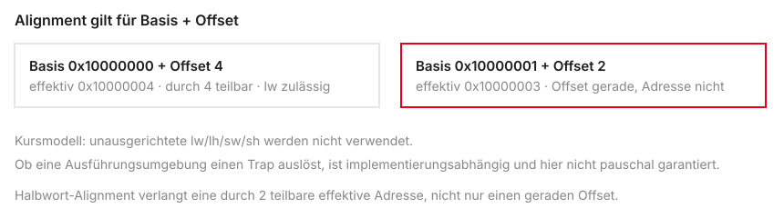
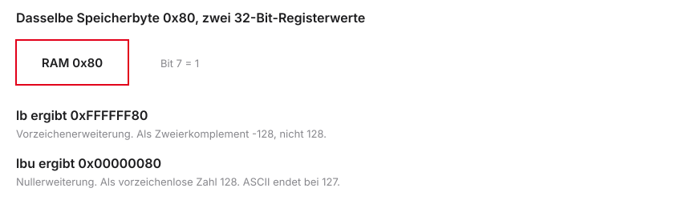

%%{init: {'theme': 'base', 'themeVariables': {'background': '#FFFFFF', 'primaryColor': '#FFFFFF', 'primaryBorderColor': '#E5E5EA', 'primaryTextColor': '#1D1D1F', 'lineColor': '#86868B', 'secondaryColor': '#F5F5F7', 'tertiaryColor': '#FFFFFF', 'mainBkg': '#FFFFFF', 'nodeBorder': '#E5E5EA', 'clusterBkg': '#F5F5F7', 'clusterBorder': '#E5E5EA', 'titleColor': '#1D1D1F', 'edgeLabelBackground': '#FFFFFF'}}}%%
graph LR
RAM[(RAM)] -->|Load| CPU[CPU / Register]
CPU -->|Branch/Jump| CPU
CPU -->|Store| RAM
style CPU fill:#FFFFFF,stroke:#E2001A,stroke-width:2px !important
style RAM fill:#FFFFFF,stroke:#E5E5EA,stroke-width:1.5px
Mikrocomputertechnik 1
Einheit 3: Speicherzugriff & Kontrollfluss
Prof. Dr.-Ing. Daniel Klünder
Speicherzugriff & Kontrollfluss
Von Arrays zu Schleifen
- Herzlich willkommen zur dritten Vorlesung in Mikrocomputertechnik 1
- Heute: von einfachen Variablen zu großen Datenmengen
- Kommunikation der CPU mit dem Arbeitsspeicher (RAM)
- Ausbruch aus dem linearen Programmablauf: Entscheidungen treffen
- Ziel: C-Schleifen in Hardware-nahen Assembler-Code übersetzen
Agenda für den heutigen Tag
- Der Arbeitsspeicher — RAM-Konzept und Pointer-Grundlagen
- Load & Store (Words) — 32-Bit-Daten und die 4-Byte-Schrittweite
- Teilzugriffe — einzelne Bytes und das S-Type-Format
- Kontrollfluss — bedingte Sprünge (Branches) für If-Abfragen
- Unbedingte Sprünge — Jumps und das Überspringen von Else-Blöcken
- Praxis in Venus — For- und While-Schleifen über Arrays
%%{init: {'theme': 'base', 'themeVariables': {'background': '#FFFFFF', 'primaryColor': '#FFFFFF', 'primaryBorderColor': '#E5E5EA', 'primaryTextColor': '#1D1D1F', 'lineColor': '#86868B', 'secondaryColor': '#F5F5F7', 'tertiaryColor': '#FFFFFF', 'mainBkg': '#FFFFFF', 'nodeBorder': '#E5E5EA', 'clusterBkg': '#F5F5F7', 'clusterBorder': '#E5E5EA', 'titleColor': '#1D1D1F', 'edgeLabelBackground': '#FFFFFF'}}}%%
graph LR
A[RAM / Pointer] --> B[Load / Store]
B --> C[Bytes / S-Type]
C --> D[Branches]
D --> E[Jumps]
E --> F[Venus]
style A fill:#FFFFFF,stroke:#E2001A,stroke-width:2px !important
style B fill:#FFFFFF,stroke:#E5E5EA,stroke-width:1.5px
style C fill:#FFFFFF,stroke:#E5E5EA,stroke-width:1.5px
style D fill:#FFFFFF,stroke:#E5E5EA,stroke-width:1.5px
style E fill:#FFFFFF,stroke:#E5E5EA,stroke-width:1.5px
style F fill:#FFFFFF,stroke:#E5E5EA,stroke-width:1.5px
Rückblick: Was wir bisher können
- Basis-Arithmetik:
add,subund logische Operationen - Strikte Assembler-Syntax: Befehl
rd, rs1, rs2 - I-Type: Konstanten direkt im Code (
addi) - Wichtige ABI-Register:
t0–t6,a0–a7,s0–s11 - Jeder Befehl ist intern exakt 32 Bit groß
Das Register-Limit (Die Werkbank)
- Die ISA sieht 32 Architekturregister vor
- Jedes Register fasst 32 Bit (4 Bytes)
x0ist fest 0; 31 Register sind beschreibbar- Das ist nicht die Speicherkapazität der CPU: Caches und CSRs sind weiterer Zustand
- Ein ILP32-
int-Array mit 1000 Elementen braucht 4000 Bytes im Speicher
Die Memory Wall (Latenzen)
- Daten in Registern: typisch in etwa einem Taktzyklus verfügbar
- Externe DRAM-Zugriffe können deutlich länger dauern als ein Registerzugriff
- Das ist eine mögliche Hardwarekonfiguration, keine ISA-Latenz
- Mikrocontroller können SRAM auf dem Chip haben
- Diese Kluft heißt in dem Beispiel Memory Wall
- Jeder unnötige RAM-Zugriff bremst das Programm stark ab
%%{init: {'theme': 'base', 'themeVariables': {'background': '#FFFFFF', 'primaryColor': '#FFFFFF', 'primaryBorderColor': '#E5E5EA', 'primaryTextColor': '#1D1D1F', 'lineColor': '#86868B', 'secondaryColor': '#F5F5F7', 'tertiaryColor': '#FFFFFF', 'mainBkg': '#FFFFFF', 'nodeBorder': '#E5E5EA', 'clusterBkg': '#F5F5F7', 'clusterBorder': '#E5E5EA', 'titleColor': '#1D1D1F', 'edgeLabelBackground': '#FFFFFF'}}}%%
graph TD
R[Register: ca. 1 Takt] --> W[Memory Wall]
M[RAM: 100 bis 300 Takte] --> W
style R fill:#FFFFFF,stroke:#E2001A,stroke-width:2px !important
style M fill:#FFFFFF,stroke:#E5E5EA,stroke-width:1.5px
style W fill:#FFFFFF,stroke:#E5E5EA,stroke-width:1.5px
Das RAM-Modell (Refresher)
- RAM als langes Array aus winzigen Fächern
- Jedes Fach hat eine eindeutige Hausnummer: die Speicheradresse
- Adressen in RV32I: 32 Bit (
0x00000000bis0xFFFFFFFF) - Ein 32-Bit-Zeiger kann \(2^{32}\) Bytes benennen
- Das ist die Adressraumgröße dieser Kurskonfiguration, kein Zwang jeder RISC-V-Plattform
- Das C-Programm sieht diesen linearen Adressraum für sich allein
| Adresse (Hex) | Wert (Hex) | Bedeutung |
|---|---|---|
0x10000000 |
0x12 |
Erstes Fach |
0x10000001 |
0xAB |
Zweites Fach |
0x10000002 |
0x00 |
Drittes Fach |
Byte-Adressierbarkeit
- Jedes Fach im RAM fasst exakt 1 Byte (8 Bits)
- Der Arbeitsspeicher ist byte-adressierbar
- Ein RISC-V-Register fasst 32 Bits (4 Bytes = 1 Word)
- Ein Word laden heißt: vier aufeinanderfolgende Fächer lesen
- Ein 32-Bit-Array belegt daher die Adressen 0, 4, 8, 12, …
%%{init: {'theme': 'base', 'themeVariables': {'background': '#FFFFFF', 'primaryColor': '#FFFFFF', 'primaryBorderColor': '#E5E5EA', 'primaryTextColor': '#1D1D1F', 'lineColor': '#86868B', 'secondaryColor': '#F5F5F7', 'tertiaryColor': '#FFFFFF', 'mainBkg': '#FFFFFF', 'nodeBorder': '#E5E5EA', 'clusterBkg': '#F5F5F7', 'clusterBorder': '#E5E5EA', 'titleColor': '#1D1D1F', 'edgeLabelBackground': '#FFFFFF'}}}%%
graph LR
Reg[32-Bit-Register] -->|braucht 4 Fächer| A0[0x00]
Reg --> A1[0x01]
Reg --> A2[0x02]
Reg --> A3[0x03]
style Reg fill:#FFFFFF,stroke:#E2001A,stroke-width:2px !important
style A0 fill:#FFFFFF,stroke:#E5E5EA,stroke-width:1.5px
style A1 fill:#FFFFFF,stroke:#E5E5EA,stroke-width:1.5px
style A2 fill:#FFFFFF,stroke:#E5E5EA,stroke-width:1.5px
style A3 fill:#FFFFFF,stroke:#E5E5EA,stroke-width:1.5px
Endianness (Refresher)
- In welcher Reihenfolge landen vier Bytes einer 32-Bit-Zahl im RAM?
- RISC-V nutzt standardmäßig Little-Endian (wie x86)
- Das niederwertigste Byte (LSB) liegt auf der kleinsten Adresse
- Das höchstwertige Byte (MSB) liegt auf der größten Adresse
- Relevant beim Debuggen im Venus-Memory-Tab
Die Load/Store-Architektur
- In Einheit 2: goldene RISC-Regel — die ALU greift nie direkt auf den RAM zu
- Befehle wie
addmit RAM-Operanden existieren in RISC-V nicht - Zwei Tore zwischen CPU und RAM:
- Load (Lesen): RAM \(\rightarrow\) Register
- Store (Schreiben): Register \(\rightarrow\) RAM
%%{init: {'theme': 'base', 'themeVariables': {'background': '#FFFFFF', 'primaryColor': '#FFFFFF', 'primaryBorderColor': '#E5E5EA', 'primaryTextColor': '#1D1D1F', 'lineColor': '#86868B', 'secondaryColor': '#F5F5F7', 'tertiaryColor': '#FFFFFF', 'mainBkg': '#FFFFFF', 'nodeBorder': '#E5E5EA', 'clusterBkg': '#F5F5F7', 'clusterBorder': '#E5E5EA', 'titleColor': '#1D1D1F', 'edgeLabelBackground': '#FFFFFF'}}}%%
graph LR
RAM[(Arbeitsspeicher)] -->|Load lw| Reg[Register x1-x31]
Reg -->|Store sw| RAM
Reg <-->|Operanden| ALU((ALU))
style ALU fill:#FFFFFF,stroke:#E5E5EA,stroke-width:1.5px
style Reg fill:#FFFFFF,stroke:#E2001A,stroke-width:2px !important
style RAM fill:#FFFFFF,stroke:#E5E5EA,stroke-width:1.5px
Was ist ein Pointer?
- Ein Pointer ist eine 32-Bit-Hausnummer (Speicheradresse) — keine Magie
- In Assembler liegen Adressen in normalen Registern (
x0–x31) - Die CPU unterscheidet die Zahl 10 nicht von der Adresse
0x1000 - Erst der Befehl (
addvs.lw) bestimmt die Interpretation
Adressen in Registern
- Mit
li(Load Immediate) Pointer initialisieren - Die Adresse im Register dient als Base-Pointer
- Der Base-Pointer markiert den Start eines Arrays im RAM
addiauf den Pointer entspricht Bewegung im Speicher- Von diesem Anker aus adressieren wir alle Elemente
Load & Store (Ganze Wörter)
- Datenfluss zwischen Register und RAM etablieren
- RISC-V-Adressierung: Base + Offset
lw(Load Word): 32-Bit-Blöcke lesensw(Store Word): 32-Bit-Blöcke schreiben- Stolperfalle: 4-Byte-Schrittweite bei Integer-Arrays
%%{init: {'theme': 'base', 'themeVariables': {'background': '#FFFFFF', 'primaryColor': '#FFFFFF', 'primaryBorderColor': '#E5E5EA', 'primaryTextColor': '#1D1D1F', 'lineColor': '#86868B', 'secondaryColor': '#F5F5F7', 'tertiaryColor': '#FFFFFF', 'mainBkg': '#FFFFFF', 'nodeBorder': '#E5E5EA', 'clusterBkg': '#F5F5F7', 'clusterBorder': '#E5E5EA', 'titleColor': '#1D1D1F', 'edgeLabelBackground': '#FFFFFF'}}}%%
graph LR
Base[Base-Register] -->|Pointer| Addr{plus Offset}
Addr --> RAM[(RAM-Adresse)]
style Base fill:#FFFFFF,stroke:#E2001A,stroke-width:2px !important
style Addr fill:#FFFFFF,stroke:#E5E5EA,stroke-width:1.5px
style RAM fill:#FFFFFF,stroke:#E5E5EA,stroke-width:1.5px
Das Problem der Adressierung
- Array mit 5 Werten; Base-Pointer
s1zeigt auf den Start - Wie greifen wir elegant auf Element 3 zu?
addi s1, s1, 12verschiebt die Basis dauerhaft auf Index 3- Für einen Einzelzugriff bleibt die Basis besser unverändert: Offset 12 im Befehl
- Lösung: Syntax der Load-/Store-Befehle
Base + Offset (Konzept)
- Speicherzugriffe in RISC-V: immer Base + Offset
- Base: Register mit der Startadresse (z. B.
s1) - Offset: konstante Zahl (Immediate), temporär addiert
- Zieladresse = Registerwert + Konstante
- Der Wert im Base-Register bleibt unverändert
Load Word (lw)
- 32-Bit-Wort aus dem RAM in ein Register laden
- Syntax:
lw rd, offset(rs1) rd: Zielregister für den RAM-Wertoffset: Konstante (12-Bit-Immediate)rs1: Base-Register (in Klammern)- Lädt exakt 4 Bytes ab der berechneten Adresse
Datenfluss beim lw
- Flussrichtung visualisieren: wie eine C-Zuweisung
- Bei
lwfließt das Datum von rechts nach links - Klammer (rechts): Quelle (RAM)
- Register (links): Ziel
%%{init: {'theme': 'base', 'themeVariables': {'background': '#FFFFFF', 'primaryColor': '#FFFFFF', 'primaryBorderColor': '#E5E5EA', 'primaryTextColor': '#1D1D1F', 'lineColor': '#86868B', 'secondaryColor': '#F5F5F7', 'tertiaryColor': '#FFFFFF', 'mainBkg': '#FFFFFF', 'nodeBorder': '#E5E5EA', 'clusterBkg': '#F5F5F7', 'clusterBorder': '#E5E5EA', 'titleColor': '#1D1D1F', 'edgeLabelBackground': '#FFFFFF'}}}%%
graph RL
RAM[(RAM: s1 + 8)] -->|4 Bytes| Reg[Ziel: t0]
style RAM fill:#FFFFFF,stroke:#86868B,stroke-width:1.5px
style Reg fill:#FFFFFF,stroke:#E2001A,stroke-width:2px !important
Store Word (sw)
- 32-Bit-Wort vom Register zurück in den RAM schreiben
- Syntax:
sw rs2, offset(rs1) rs2: Quellregister (zu speichernde Daten)offset(rs1): Zieladresse im RAM- Ausnahme: Ziel (RAM) steht rechts — Quellregister links
Datenfluss beim sw
- Bei
swfließt das Datum von links nach rechts - Register (links): Quelle
- Berechnete RAM-Adresse (rechts): Ziel
- Store schreibt keinen neuen Wert ins Register File — kein
rd
%%{init: {'theme': 'base', 'themeVariables': {'background': '#FFFFFF', 'primaryColor': '#FFFFFF', 'primaryBorderColor': '#E5E5EA', 'primaryTextColor': '#1D1D1F', 'lineColor': '#86868B', 'secondaryColor': '#F5F5F7', 'tertiaryColor': '#FFFFFF', 'mainBkg': '#FFFFFF', 'nodeBorder': '#E5E5EA', 'clusterBkg': '#F5F5F7', 'clusterBorder': '#E5E5EA', 'titleColor': '#1D1D1F', 'edgeLabelBackground': '#FFFFFF'}}}%%
graph LR
Reg[Quelle: t0] -->|4 Bytes| RAM[(RAM: s1 + 12)]
style Reg fill:#FFFFFF,stroke:#86868B,stroke-width:1.5px
style RAM fill:#FFFFFF,stroke:#E2001A,stroke-width:2px !important
C-Arrays vs. Assembler
- Array aus 32-Bit-Integern (
int) durchlaufen - In C abstrahiert:
array[0],array[1],array[2] - In Assembler: Bytes zählen — keine Index-Magie
- Jeder
intist 4 Bytes groß → Adressen um 4 erhöhen - Häufigste Fehlerquelle im Labor
Die 4-Byte-Schrittweite
- Startadressen aufeinanderfolgender 32-Bit-Wörter: Vielfache von 4
- Index 0 → Offset 0
- Index 1 → Offset 4
- Index 2 → Offset 8
- Index 3 → Offset 12
| C-Index | Assembler-Offset | RAM (Base = 0x100) |
|---|---|---|
[0] |
0 | 0x100–0x103 |
[1] |
4 | 0x104–0x107 |
[2] |
8 | 0x108–0x10B |
Element 0 laden
- Pointer auf Array-Start liegt in
s1 array[0]nacht0laden- Offset ist 0
Element 1 und 2 laden
array[1]undarray[2]laden- Offsets: 4 und 8
- Base-Register
s1bleibt unverändert (weiterhin Element 0)
Die Illusion des C-Compilers
- Warum nie
array[i * 4]in C schreiben? - Der Compiler nimmt Ihnen die Skalierung ab
- Bei
int-Arrays weiß er: Elementgröße 4 Bytes - Aus
array[i]wird Assembler mit \(i \cdot 4\) vor dem Load - Assembler enttarnt diese High-Level-Abstraktion
Komplettes Beispiel (Lesen)
- C-Zeile:
a = array[2]; ains0, Array-Base ins1- Index 2 → Offset \(2 \cdot 4 = 8\)
Komplettes Beispiel (Schreiben)
- Modifikation:
array[3] = a + b; - Annahmen:
ains0,bint0, Array ins1 - Zwei Schritte: erst ALU, dann Store
Speicherausrichtung (Alignment)
- Die effektive Adresse
Basis + Offsetmuss zur Zugriffsbreite passen - Ein gerader Offset reicht bei ungerader Basis nicht
- Wort: effektiv durch 4 teilbar; Halbwort: durch 2
- Kursmodell: unausgerichtete Zugriffe werden nicht verwendet
- Ein Alignment-Trap ist nicht für jede RISC-V-Umgebung garantiert

Teilzugriffe & S-Type-Format
- Nicht alles ist ein 32-Bit-Integer (z. B. ASCII-Zeichen)
- Zugriff auf einzelne Bytes:
lbundsb - Vorzeichenerweiterung bei kleinen Daten
- Signed vs. Unsigned Loads
- S-Type-Instruction-Format für Store-Befehle
%%{init: {'theme': 'base', 'themeVariables': {'background': '#FFFFFF', 'primaryColor': '#FFFFFF', 'primaryBorderColor': '#E5E5EA', 'primaryTextColor': '#1D1D1F', 'lineColor': '#86868B', 'secondaryColor': '#F5F5F7', 'tertiaryColor': '#FFFFFF', 'mainBkg': '#FFFFFF', 'nodeBorder': '#E5E5EA', 'clusterBkg': '#F5F5F7', 'clusterBorder': '#E5E5EA', 'titleColor': '#1D1D1F', 'edgeLabelBackground': '#FFFFFF'}}}%%
graph LR
RAM[1 Byte im RAM] -->|lb| Reg[32-Bit-Register]
Reg -->|Sign Ext| ALU
style RAM fill:#FFFFFF,stroke:#E5E5EA,stroke-width:1.5px
style Reg fill:#FFFFFF,stroke:#E2001A,stroke-width:2px !important
style ALU fill:#FFFFFF,stroke:#E5E5EA,stroke-width:1.5px
Problem: Kleine Daten laden
- Ein C-String (
char[]) hat Elemente von 1 Byte lwwürde vier Buchstaben gleichzeitig laden- Lösung:
lb(Load Byte) undlh(Load Halfword) - Bei Byte-Arrays ist das Offset tatsächlich +1 (Element = 1 Byte)
Load Byte (lb)
- Syntax:
lb rd, offset(rs1) - Liest genau 1 Byte von der Adresse
- Zielregister
rdist 32 Bit groß - 8 Bits geladen — was passiert mit den restlichen 24 Bits?
- Die Architektur füllt die Lücke automatisch (Sign-Extension)
Sign-Extension (Vorzeichenerweiterung)
- Nach
lbbleiben links im 32-Bit-Register 24 Bits leer - Die CPU darf diese Lücke nicht mit Zufallswerten oder sturen Nullen füllen
- Lösung: automatische Vorzeichenerweiterung (Sign-Extension)
- Bit 7 des geladenen Bytes wird in alle 24 linken Bits kopiert
- So bleibt der Zweierkomplement-Wert (z. B. \(-5\)) identisch
%%{init: {'theme': 'base', 'themeVariables': {'background': '#FFFFFF', 'primaryColor': '#FFFFFF', 'primaryBorderColor': '#E5E5EA', 'primaryTextColor': '#1D1D1F', 'lineColor': '#86868B', 'secondaryColor': '#F5F5F7', 'tertiaryColor': '#FFFFFF', 'mainBkg': '#FFFFFF', 'nodeBorder': '#E5E5EA', 'clusterBkg': '#F5F5F7', 'clusterBorder': '#E5E5EA', 'titleColor': '#1D1D1F', 'edgeLabelBackground': '#FFFFFF'}}}%%
graph LR
Byte[RAM Byte: 10001111] -->|Sign Ext| Reg[Reg: 1111... 10001111]
Byte2[RAM Byte: 01110000] -->|Sign Ext| Reg2[Reg: 0000... 01110000]
style Byte fill:#FFFFFF,stroke:#E5E5EA,stroke-width:1.5px
style Byte2 fill:#FFFFFF,stroke:#E5E5EA,stroke-width:1.5px
style Reg fill:#FFFFFF,stroke:#E2001A,stroke-width:2px !important
style Reg2 fill:#FFFFFF,stroke:#E2001A,stroke-width:2px !important
Unsigned Load (lbu)
- Manche Bytes sind keine Zweierkomplement-Zahlen
- ASCII ist 7 Bit; ein Kanalwert oder ein allgemeines Byte kann 0 bis 255 sein
- Dafür
lbu, nichtlb lbvon Byte0x80ergibt0xFFFFFF80;lbuergibt0x00000080

Halfwords laden (lh, lhu)
- Zwischen Word (32 Bit) und Byte (8 Bit): Halfword = 16 Bit (2 Bytes)
- Anwendung:
shortin C, Audio-Samples (z. B. 16-Bit-WAV) lh: mit Sign-Extension;lhu: Unsigned mit Zero-Fill- Alignment: die effektive Adresse Basis + Offset muss durch 2 teilbar sein
Store Byte & Halfword (sb, sh)
- Gegenstücke zum Laden:
sbundsh - Syntax wie bei
sw:sb rs2, offset(rs1) - Nur die untersten 8 bzw. 16 Bits des Registers wandern in den RAM
- Obere Bits werden abgeschnitten und ignoriert
Warum gibt es kein sbu?
- Im Handbuch fehlt
sbu(Store Byte Unsigned) — absichtlich - Unsigned ist nur relevant, wenn Lücken im Register aufgefüllt werden
- Beim Speichern wird nichts aufgefüllt, nur abgeschnitten
- Dem RAM ist egal, ob die 8 Bits eine Zahl oder ein Pixel sind
%%{init: {'theme': 'base', 'themeVariables': {'background': '#FFFFFF', 'primaryColor': '#FFFFFF', 'primaryBorderColor': '#E5E5EA', 'primaryTextColor': '#1D1D1F', 'lineColor': '#86868B', 'secondaryColor': '#F5F5F7', 'tertiaryColor': '#FFFFFF', 'mainBkg': '#FFFFFF', 'nodeBorder': '#E5E5EA', 'clusterBkg': '#F5F5F7', 'clusterBorder': '#E5E5EA', 'titleColor': '#1D1D1F', 'edgeLabelBackground': '#FFFFFF'}}}%%
graph LR
Reg[Register: 1111... 10001111] -->|sb schneidet ab| RAM[RAM: 10001111]
style Reg fill:#FFFFFF,stroke:#E5E5EA,stroke-width:1.5px
style RAM fill:#FFFFFF,stroke:#E2001A,stroke-width:2px !important
Decodierung: Der lw-Befehl
lwnutzt das bekannte I-Type-Format- Opcode: Load
rs1: Base-Registerimm: 12-Bit-Offsetrd: Zielregister für den RAM-Wert
| Bits | Feld |
|---|---|
| 31:20 | imm[11:0] (Offset) |
| 19:15 | rs1 (Base) |
| 14:12 | funct3 (Größe) |
| 11:7 | rd (Ziel) |
| 6:0 | opcode (Load) |
Das Problem beim sw-Befehl
swbraucht Base (rs1), Datenquelle (rs2) und 12-Bit-Offset- Das I-Type-Format hat keinen Platz für
rs2(dort liegt das Immediate) - R-Type hat kein Immediate; I-Type hat kein
rs2 - Für Stores braucht es ein neues Formular
| Format | rs1 |
rs2 |
rd |
Immediate |
|---|---|---|---|---|
| R-Type | ja | ja | ja | nein |
| I-Type | ja | nein | ja | ja (12 Bit) |
Bedarf sw |
ja | ja | nein | ja (12 Bit) |
Das S-Type-Format (Die Lösung)
- Store-Befehle nutzen das S-Type Instruction Format
- Kein Zielregister
rd(Schreiben geht in den RAM) - Das 5-Bit-
rd-Feld wird fürimm[4:0]wiederverwendet imm[11:5]liegt links (analog zufunct7beim R-Type)- Das Offset ist im Maschinenwort zweigeteilt
| Bits | Feld |
|---|---|
| 31:25 | imm[11:5] (oberes Offset) |
| 24:20 | rs2 (Quelle) |
| 19:15 | rs1 (Base) |
| 14:12 | funct3 (Größe) |
| 11:7 | imm[4:0] (unteres Offset) |
| 6:0 | opcode (Store) |
Warum zerrisst RISC-V das Immediate?
- Zerrissenes Immediate wirkt auf den ersten Blick umständlich
- Grund: Hardware-Effizienz — Silizium sparen
- In (fast) jedem Format liegen
rs1undrs2an denselben Bit-Positionen - Der Kabelbaum zum Register File muss nicht umgeschaltet werden
%%{init: {'theme': 'base', 'themeVariables': {'background': '#FFFFFF', 'primaryColor': '#FFFFFF', 'primaryBorderColor': '#E5E5EA', 'primaryTextColor': '#1D1D1F', 'lineColor': '#86868B', 'secondaryColor': '#F5F5F7', 'tertiaryColor': '#FFFFFF', 'mainBkg': '#FFFFFF', 'nodeBorder': '#E5E5EA', 'clusterBkg': '#F5F5F7', 'clusterBorder': '#E5E5EA', 'titleColor': '#1D1D1F', 'edgeLabelBackground': '#FFFFFF'}}}%%
graph TD
R[R-Type: rs1 Bits 15-19, rs2 Bits 20-24]
I[I-Type: rs1 Bits 15-19]
S[S-Type: rs1 Bits 15-19, rs2 Bits 20-24]
R --> Decoder[Feste Kabel zur Register-Werkbank]
I --> Decoder
S --> Decoder
style Decoder fill:#FFFFFF,stroke:#E2001A,stroke-width:2px !important
style R fill:#FFFFFF,stroke:#E5E5EA,stroke-width:1.5px
style I fill:#FFFFFF,stroke:#E5E5EA,stroke-width:1.5px
style S fill:#FFFFFF,stroke:#E5E5EA,stroke-width:1.5px
Zusammenfassung: Load & Store
- Werkzeuge, um die Memory Wall zu überwinden
- Alle nutzen Base + Offset mit runden Klammern
- Das Offset wird vorzeichenerweitert — auch negative Offsets wie
-4(s1)sind möglich
| Mnemonic | Name | Breite | Sign-Ext. (Laden) |
|---|---|---|---|
lw / sw |
Word | 32 Bit (4 Bytes) | entfällt / (egal) |
lh / sh |
Halfword | 16 Bit (2 Bytes) | ja / (egal) |
lhu |
Half Unsigned | 16 Bit (2 Bytes) | nein (Zero-Fill) |
lb / sb |
Byte | 8 Bit (1 Byte) | ja / (egal) |
lbu |
Byte Unsigned | 8 Bit (1 Byte) | nein (Zero-Fill) |
Der Kontrollfluss (Branches)
- Ausbruch aus der starren, linearen Code-Ausführung
- Program Counter (PC) und seine Manipulation
- Labels als Ankerpunkte im Text
- Bedingte Sprünge (
beq,bne,blt) für If/Else - Operanden vertauschen, um fehlende Relationen zu simulieren
%%{init: {'theme': 'base', 'themeVariables': {'background': '#FFFFFF', 'primaryColor': '#FFFFFF', 'primaryBorderColor': '#E5E5EA', 'primaryTextColor': '#1D1D1F', 'lineColor': '#86868B', 'secondaryColor': '#F5F5F7', 'tertiaryColor': '#FFFFFF', 'mainBkg': '#FFFFFF', 'nodeBorder': '#E5E5EA', 'clusterBkg': '#F5F5F7', 'clusterBorder': '#E5E5EA', 'titleColor': '#1D1D1F', 'edgeLabelBackground': '#FFFFFF'}}}%%
graph TD
A[Code Zeile 1] --> B{Entscheidung}
B -->|Wahr Branch| C[Zeile 50]
B -->|Falsch| D[Zeile 2]
style B fill:#FFFFFF,stroke:#E2001A,stroke-width:2px !important
style A fill:#FFFFFF,stroke:#E5E5EA,stroke-width:1.5px
style C fill:#FFFFFF,stroke:#E5E5EA,stroke-width:1.5px
style D fill:#FFFFFF,stroke:#E5E5EA,stroke-width:1.5px
Der Program Counter (Der Dirigent)
- Der PC speichert die RAM-Adresse des aktuellen Befehls (Venus zeigt genau diese Adresse)
- Folgeinstruktion: \(PC+4\); Normalfall: Hardware erhöht nach dem Befehl um \(+4\)
- Warum 4? Jeder RV32I-Befehl ist exakt 4 Bytes groß
- Der Prozessor fällt von Zeile zu Zeile (Fall-Through)
Das IF-Problem
- In C ist Kontrollfluss abstrahiert:
if (a == b) { ... } else { ... } - Geschweifte Klammern markieren in C einen Block; im Maschinencode gibt es dafür kein eigenes Zeichen
- Zum Überspringen muss der PC auf die Adresse nach dem Block zeigen
- Adressabstände per Hand zu pflegen wäre fehleranfällig
Labels (Sprungmarken)
- Labels: Textmarken mit Doppelpunkt (
:) im Quelltext - Keine Prozessor-Befehle — kosten keine Ausführungszeit
- Der Assembler berechnet die exakte RAM-Adresse des Labels
- Sprungbefehle referenzieren den Label-Namen, nicht die Hex-Adresse
Branch Equal (beq)
- Syntax:
beq rs1, rs2, Label(Branch if Equal) - Vergleich der Registerinhalte
- Bei Gleichheit: PC → Label-Adresse (Sprung)
- Bei Ungleichheit: Fall-Through mit PC \(+4\)
Branch Not Equal (bne)
- Gegenstück zu
beq:bne rs1, rs2, Label - Springt nur bei unterschiedlichen Registerwerten
- Typisches Schleifen-Muster: solange Zähler ungleich Grenze, zurück nach oben
Relationen (blt, bge)
blt: Branch if Less Than — springt wenn \(rs1 < rs2\)bge: Branch if Greater or Equal — springt wenn \(rs1 ≥ rs2\)- Interpretation als Zweierkomplement (mit Vorzeichen)
- \(-5\) ist für
bltkorrekt kleiner als \(2\)
Unsigned Branches (bltu, bgeu)
- Pointer und Rohdaten (Farben) sind oft vorzeichenlos
- Adresse
0xF0000000wäre als signed negativ —bltläge falsch - Suffix
u:bltu,bgeuvergleichen die Bitmuster vorzeichenlos - Dasselbe Muster
0xFFFFFFFF: signed kleiner als1, unsigned größer als1 - Adressvergleiche in diesem Kurs deshalb mit
bltu/bgeu
Warum gibt es kein \(\le\)?
- Keine Hardware-Befehle für \(\le\) oder \(>\)
- Absichtlicher Minimalismus: jeder Befehl kostet Decoder-Fläche
- \(A ≤ B\) ist logisch identisch mit \(B ≥ A\)
- Fehlendes \(\le\) simulieren: Operanden tauschen und
bgenutzen
Pseudo-Branches (ble, bgt)
- Ständiges Umdenken der Operanden ist fehleranfällig
- Venus bietet Pseudo-Instruktionen: z. B.
ble(Branch Less Equal) - Der Assembler vertauscht Operanden und erzeugt echtes
bge
Architektur: Das B-Type-Format (Vorschau)
- Branches nutzen das B-Type-Format (Vorschau; vereinfacht: verwandt mit S-Type)
- Das Label wird zum Immediate (Distanz), nicht zur absoluten RAM-Adresse
- Neuer PC = alter PC + Immediate (PC-relative Adressierung)
- Vorteil: verschiebbarer Code bleibt korrekt
Unbedingte Sprünge (Jumps)
- Architektonisches Puzzleteil für vollständige Kontrollstrukturen
- Warum Branches allein nicht ausreichen
- Code-Blöcke ohne Wenn und Aber überspringen
- Pseudo-Instruktion
j(Jump) - Mentaler Algorithmus: If/Else aus C übersetzen
%%{init: {'theme': 'base', 'themeVariables': {'background': '#FFFFFF', 'primaryColor': '#FFFFFF', 'primaryBorderColor': '#E5E5EA', 'primaryTextColor': '#1D1D1F', 'lineColor': '#86868B', 'secondaryColor': '#F5F5F7', 'tertiaryColor': '#FFFFFF', 'mainBkg': '#FFFFFF', 'nodeBorder': '#E5E5EA', 'clusterBkg': '#F5F5F7', 'clusterBorder': '#E5E5EA', 'titleColor': '#1D1D1F', 'edgeLabelBackground': '#FFFFFF'}}}%%
graph LR
A[Bedingung] -->|Wahr| IF[If-Block]
A -->|Falsch| ELSE[Else-Block]
IF -->|ueberspringe Else| END[Ende]
ELSE --> END
style IF fill:#FFFFFF,stroke:#E2001A,stroke-width:2px !important
style A fill:#FFFFFF,stroke:#E5E5EA,stroke-width:1.5px
style ELSE fill:#FFFFFF,stroke:#E5E5EA,stroke-width:1.5px
style END fill:#FFFFFF,stroke:#E5E5EA,stroke-width:1.5px
Das If-Else-Problem
- If/Else erzwingt eine Entweder-Oder-Entscheidung
- Beide Blöcke liegen im RAM direkt untereinander
- Bei wahrer Bedingung: Fall-Through durch den If-Block
- Danach fällt der PC physikalisch in den Else-Block
- Am Ende des If-Blocks muss der Else-Block strikt übersprungen werden
Der bedingungslose Sprung
- Branches (
beq,blt) fragen die ALU nach einer Bedingung - Wir brauchen: Springe. Immer.
- Solche Befehle heißen Jumps
- Sie überschreiben den PC absolut bedingungslos
- Unverzichtbar für If-Ausstiege, Endlosschleifen und später Funktionsaufrufe
%%{init: {'theme': 'base', 'themeVariables': {'background': '#FFFFFF', 'primaryColor': '#FFFFFF', 'primaryBorderColor': '#E5E5EA', 'primaryTextColor': '#1D1D1F', 'lineColor': '#86868B', 'secondaryColor': '#F5F5F7', 'tertiaryColor': '#FFFFFF', 'mainBkg': '#FFFFFF', 'nodeBorder': '#E5E5EA', 'clusterBkg': '#F5F5F7', 'clusterBorder': '#E5E5EA', 'titleColor': '#1D1D1F', 'edgeLabelBackground': '#FFFFFF'}}}%%
graph TD
IF[Ende des IF-Blocks] -->|bedingungsloser Sprung| END[Code nach dem Else]
ELSE[ELSE-Block] -.-> END
style IF fill:#FFFFFF,stroke:#E2001A,stroke-width:2px !important
style ELSE fill:#FFFFFF,stroke:#E5E5EA,stroke-width:1.5px
style END fill:#FFFFFF,stroke:#E5E5EA,stroke-width:1.5px
Jump (j) — die Pseudo-Instruktion
- Im Labor: Pseudo-Instruktion
j - Syntax:
j Label - Label → relatives Offset; die CPU addiert es zum PC
- Code physisch unter dem
jwird nicht erreicht (toter Code)
Vorschau: Der echte Befehl (jal)
- Der Chip kennt
jnicht; Venus übersetzt zujal jal= Jump and Link- Syntax:
jal rd, Label— springt und speichert die Rücksprungadresse inrd - Für normales
johne Rückkehr: Zielx0(Hardwired Zero)
If-Else übersetzen (Konzept)
- Beispiel:
if (s0 == s1) { t0 = 1; } else { t0 = 2; } - Drei Bausteine: bedingter Sprung (
bne), unbedingter Sprung (j), zwei Labels - Struktur als Blöcke denken
- Streng in vier algorithmischen Schritten vorgehen
Schritt 1: Die Invertierung
- Wir fragen nicht, ob die C-Bedingung wahr ist
- Wir fragen, ob sie falsch ist
- C:
if (s0 == s1)→ Assembler:bne s0, s1, ElseBlock - Wahr → Fall-Through in den If-Block (spart Befehle)
- Falsch → Sprung zum Else-Label
Schritt 2: Der IF-Block
bnehat nicht gegriffen → Bedingung war wahr- Hier der normale If-Code; kein If-Label nötig (Fall-Through)
- Beispiel: Konstante 1 nach
t0
Schritt 3: Der rettende Jump
- Unter dem If-Block liegt im Speicher der Else-Block
- Ohne Gegenmaßnahme würde der PC auch
t0 = 2ausführen - Am If-Ende:
j EndIf— Else überspringen EndIfsteht ganz am Ende der Struktur
Schritt 4: Der Else-Block
- Label
ElseBlock:— Ziel des ersten Branches - Alternative:
t0 = 2 - Darunter
EndIf:als Sammelbecken beider Pfade - Ab dort wieder linearer Ablauf
Praxis: Algorithmen in Venus
- Transfer in die Labor-Umgebung
- C-Schleifen (
while,for) in Assembler - Kontrollfluss + Speicherzugriff kombinieren
- Iteration über Arrays im RAM
- Memory-Interface in Venus
%%{init: {'theme': 'base', 'themeVariables': {'background': '#FFFFFF', 'primaryColor': '#FFFFFF', 'primaryBorderColor': '#E5E5EA', 'primaryTextColor': '#1D1D1F', 'lineColor': '#86868B', 'secondaryColor': '#F5F5F7', 'tertiaryColor': '#FFFFFF', 'mainBkg': '#FFFFFF', 'nodeBorder': '#E5E5EA', 'clusterBkg': '#F5F5F7', 'clusterBorder': '#E5E5EA', 'titleColor': '#1D1D1F', 'edgeLabelBackground': '#FFFFFF'}}}%%
graph LR
Array[RAM Array] -->|Iteration| Loop((Schleife))
Loop -->|Pointer + 4| Array
style Loop fill:#FFFFFF,stroke:#E2001A,stroke-width:2px !important
style Array fill:#FFFFFF,stroke:#E5E5EA,stroke-width:1.5px
Die while-Schleife
- Einfachstes Loop-Konstrukt; kopfgesteuert
- Label am Start (
LoopStart) - Branch bei falscher Bedingung zum Exit (
LoopExit) - Am Rumpf-Ende:
j LoopStart
while in Assembler
- Zähler
aint0, Grenze 10 int1 - C:
a < 10→ Exit mitbge(sobald \(a \ge 10\))
Die for-Schleife
- Syntaktisch kompakte
while-Schleife - Vier Zonen: Init, Condition, Step, Body
- Init vor der Schleife; Step zwingend am Ende des Bodies (vor dem Jump)
for in Assembler
- Zähler
iint0, Grenze int1 - Struktur fast wie
while— Position des Steps beachten
Arrays iterieren (Pointer Math)
- Ziel: alle Array-Elemente aufsummieren
- In der Schleife:
lw - Problem: Offset bei
lwist eine feste Konstante — keine Variablei - Lösung: Base-Pointer in jedem Durchlauf verschieben
Das Pointer-Update (Labor-Trick)
- Offset starr auf 0: immer
lw t2, 0(s1) - Nächstes Element: Base-Pointer aktualisieren
- Bei 32-Bit-Integern:
addi s1, s1, 4pro Durchlauf
Venus Onboarding: Memory-Tab
- Register-Ansicht reicht nicht mehr: Blick in den RAM
- Venus: Reiter Memory (neben Editor/Simulator)
- Hex-Dump; Adressen im Raster
0x00,0x04,0x08, … - Word-Inspektion: Little-Endian beachten
Daten im Editor deklarieren (.data)
- Startwerte vor Programmstart in den RAM bringen
- Direktive
.datafür statische Variablen .wordlegt 32-Bit-Werte hintereinander (Abstand 4 Bytes)- Im
.text-Block: Adresse per Label laden (la)
Debugging von Schleifen
- Falscher Branch → Endlosschleife (Run stoppt nicht)
- Workflow: Register auf Dezimal, nur Step nutzen
- Prüfen: wächst der Zähler (
t0)? - Prüfen: springt der Pointer (
s1) in 4er-Schritten? - Prüfen: löst
bgean der Grenze korrekt aus?
%%{init: {'theme': 'base', 'themeVariables': {'background': '#FFFFFF', 'primaryColor': '#FFFFFF', 'primaryBorderColor': '#E5E5EA', 'primaryTextColor': '#1D1D1F', 'lineColor': '#86868B', 'secondaryColor': '#F5F5F7', 'tertiaryColor': '#FFFFFF', 'mainBkg': '#FFFFFF', 'nodeBorder': '#E5E5EA', 'clusterBkg': '#F5F5F7', 'clusterBorder': '#E5E5EA', 'titleColor': '#1D1D1F', 'edgeLabelBackground': '#FFFFFF'}}}%%
graph TD
Klick[Klick Step] --> CheckZaehler[Wird i groesser?]
CheckZaehler --> CheckPointer[Wird Pointer +4?]
CheckPointer --> Branch[Ist bge invertiert?]
style Klick fill:#FFFFFF,stroke:#E2001A,stroke-width:2px !important
style CheckZaehler fill:#FFFFFF,stroke:#E5E5EA,stroke-width:1.5px
style CheckPointer fill:#FFFFFF,stroke:#E5E5EA,stroke-width:1.5px
style Branch fill:#FFFFFF,stroke:#E5E5EA,stroke-width:1.5px
Labor-Aufgabe: Array summieren
- Mit einer Schleife über ein Array iterieren und die Summe bilden
- Setup: Array mit 5 Werten unter
.data - Prüfpunkt: nach
mv a0, s0steht 150 ina0, bevora0zur Dienstnummer wird
Checkliste:
- Array-Adresse laden (
la) - Startwerte: Summe \(= 0\), Zähler \(= 0\), Grenze \(= 5\)
- Labels und Exit-Branch (
bge) - Wert lesen (
lw) und zur Summe addieren - Pointer um 4 erhöhen
- Zähler um 1 erhöhen
Die Summe \(10+20+30+40+50\) ist 150. Am Label Ergebnis_pruefen, vor mv a1, a0, steht diese Summe in a0 und in s0. Danach wird a0 zur Venus-Dienstnummer.
Abschlussblatt
- Begriffe: effektive Adresse,
lb/lbu, Branch-Offset, Little Endian. - Modellannahme: ILP32,
sizeof(int) = 4, unausgerichtete Zugriffe vermeiden. - Typischer Fehler:
&array + i*4als C-Ausdruck oder ASCII mit dem Bereich 0 bis 255 gleichsetzen. - Übung: Index 3 hat Offset 12;
lbvon0xFFergibt \(-1\),lbuergibt 255; Summe 10+20+30+40+50 = 150, danach zeigt der Pointer 20 Byte hinter die Basis.